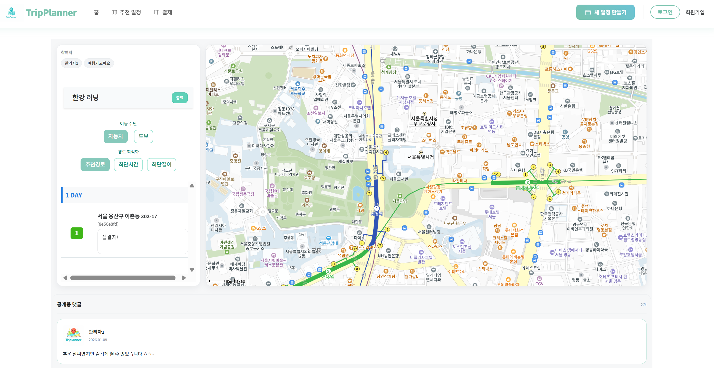

TripPlanner – 지도 기반 일정 관리 플랫폼
기간: 2025.12.04 ~ 2025.12.22
Java 21
Spring Boot
React
JavaScript
Oracle
MyBatis
JWT
AWS EC2
Tomcat
요약
- 하루 약속이나 짧은 일정도 가볍게 등록·공유할 수 있는 지도 기반 일정 관리 서비스
- 공유 링크를 통해 비회원도 일정 조회 및 댓글 작성 가능
- 일정 상태(약속 전/진행중/종료)에 따라 댓글·후기 공개 여부를 제어하는 구조 설계
역할
- 일정 등록 및 태그·이미지 저장 (회원 전용)
- UUID 기반 일정 공유 링크 생성 및 비회원 일정 조회
- 회원/비회원 댓글 작성 (JWT 기반 권한 분기 처리)
- 일정 상태에 따른 댓글·후기 공개/비공개 처리
- 마이페이지 내 나의 일정 조회 기능 구현
성과
- 하루 약속이나 짧은 일정도 부담 없이 등록·공유할 수 있는 일정 관리 경험 제공
- 공유 링크를 통해 비회원도 일정을 조회하고 댓글을 남길 수 있는 구조 구현
- 일정 상태에 따라 댓글·후기 노출을 제어하여 서비스 흐름이 자연스럽게 이어지도록 설계
- 윈도우 기반 서버 환경에서 직접 배포를 진행하며, 실제 운영 환경을 고려한 개발 경험 축적

